About Me
I am a loyal and honest, hard-working divorced mom.
I worked officially in Quality Assurance for 15 months, but 8 years in Help Desk Support with testing on the side.
My hobbies are crochet, knitting, embroidery, coloring, cross stitching, and reading.
I grew up in West Jordan, Utah and live there currently.
Skills
Software testing - Skilled in manual and regression testing, defect reproduction, acceptance criteria validation, root cause investigation, and identifying product risks before release.
Technical Support in custom operating systems with android phones and Software as a Service (SaaS program).
Technical writing - Knowledge base materials and manuals
Cross-Functional Collaborator between developers and operations teams.
Analyzing processes for improvement
Additional Qualities:
- Critical thinker
- Investigative
- Observant
- Empathetic
- Resourceful
- Adaptable
- Quality-minded
- Customer-focused
- Collaborator
Work Experience
TruHearing
Member Services - June 2026 to present
Troomi
Quality Assurance - February 2025 to June 2026
Tier 2 Escalations Representative - October 2024 to February 2025
Customer Experience Associate - March 2024 to October 2024
SimplicityCollect
Help Desk Support and Quality Assurance - May 2019 to February 2024
Ceridian
Quality Assurance - August 2007 to September 2012
My Creations
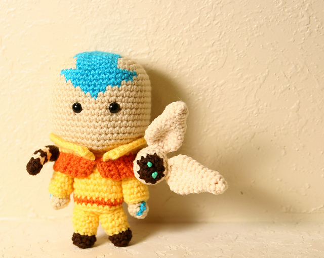
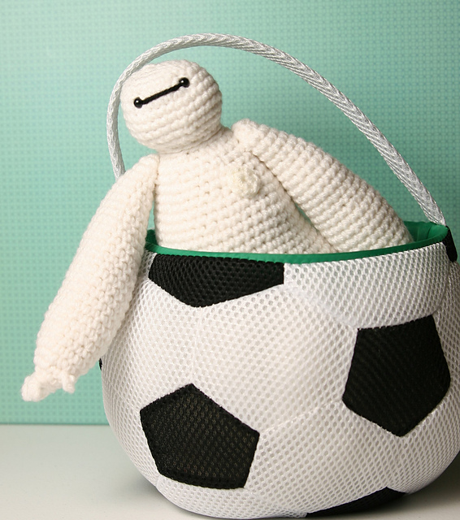
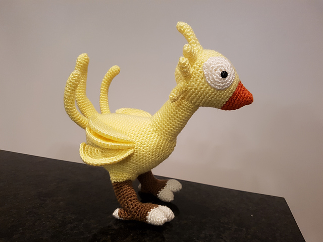
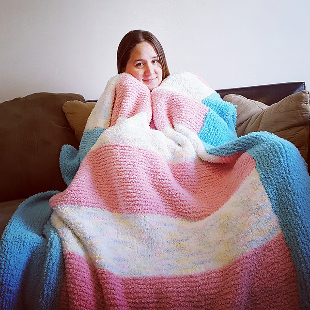
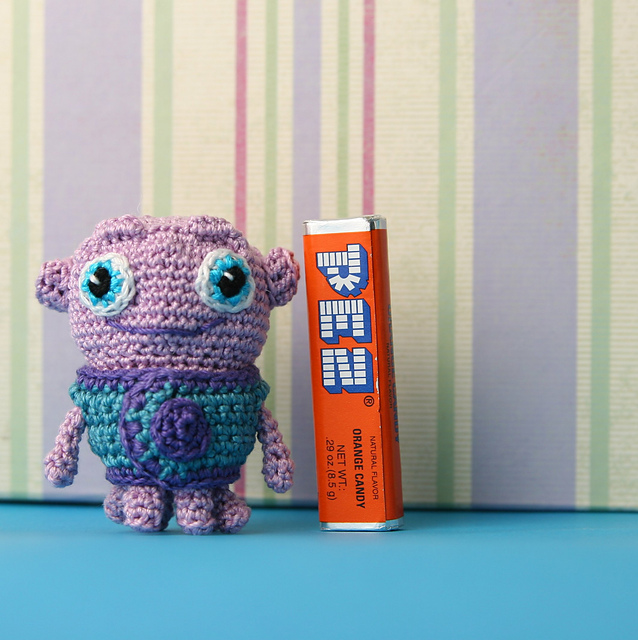
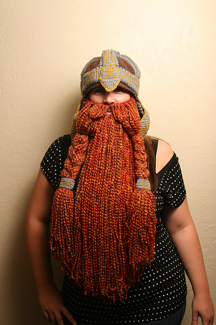
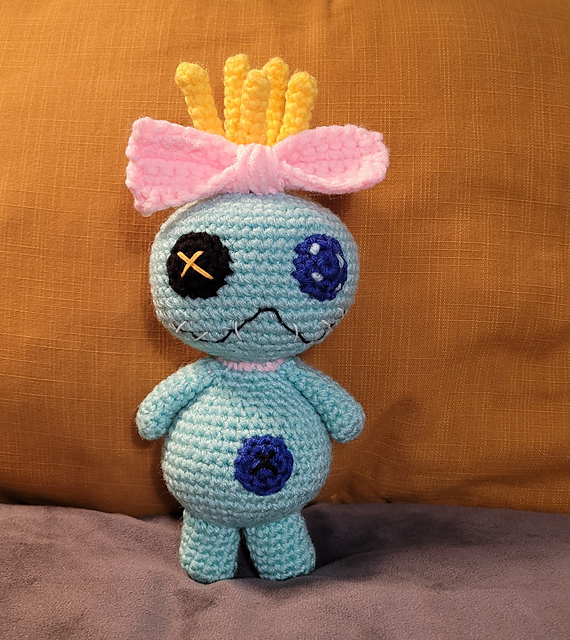
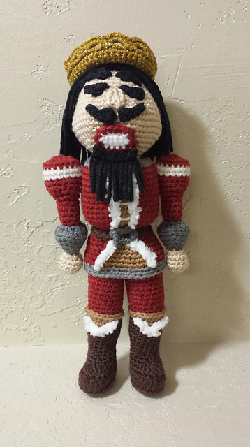
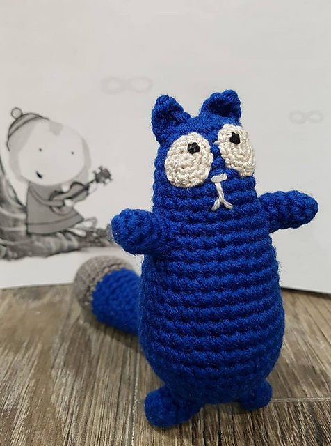
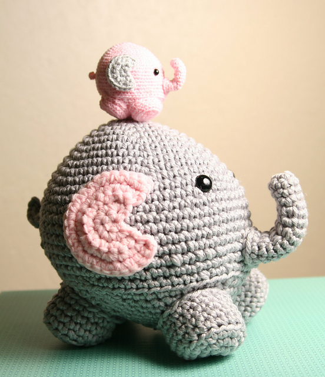
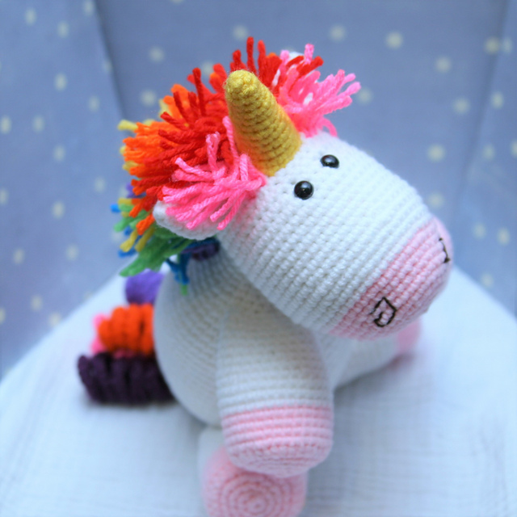